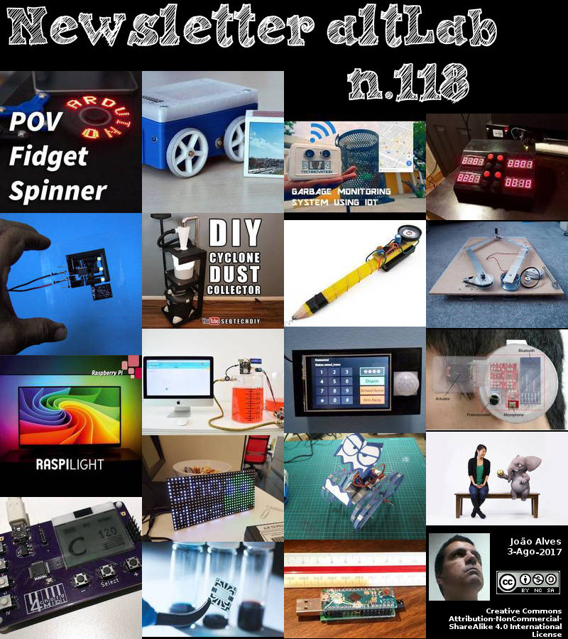

2017-08-03 - Nº 118


Editorial
Esta é a Newsletter Nº 118 que se apresenta com o mesmo formato que as anteriores. Se gostar da Newsletter partilhe-a!
Todas as Newsletters encontram-se indexadas no link.
Esta Newsletter tem os seguintes tópicos:
Faz hoje anos que nascia, em 1811, Elisha Otis. Este industrial norte-americano é o inventor de um dispositivo de segurança que impede que os elevadores caiam se o cabo de elevação falhar. Esta invenção permitiu usar com segurança elevadores em arranha-céus. O travão que ele inventou usou trilhos de guia dentados no eixo do elevador e uma barra de mola que agarra automaticamente no trilho dentado da cabine do elevador se o cabo falhar. Faz também anos hoje que nascia, em 1851, George Francis FitzGerald. Foi um professor irlandês de "filosofia natural e experimental" (ou seja, física) no Trinity College, em Dublin, na Irlanda, durante o último quarto do século XIX. Ele é conhecido pelo seu trabalho na teoria eletromagnética e pela contracção de Lorentz-FitzGerald, que se tornou parte integrante da Teoria Especial da Relatividade de Einstein. A cratera de FitzGerald no lado oposto da Lua é nomeada em sua honra. Por fim faz anos hoje que nascia, em 1907, Paul Eisler. Este inventor austríaco nascido em Viena é responsável pela invenção da placa de circuito integrado. Em 1942, e pela primeira vez era produzido um rádio usando uma placa de circuito impresso (PCB). Na época, era comum interligar todos os componentes electrónicos com fios soldados à mão, um método de fabricação que não se presta para nenhum grau elevado de automação. Primeiramente aplicados em fusíveis de proximidade para mísseis antiaéreos, as PCBs encontraram, posteriormente, uma aplicação quase universal em produtos electrónicos, produzindo dispositivos altamente miniaturizados que podem ser produzidos em massa.
Esta semana a BCMI, e empresa fundada por Massimo Banzi, David Cuartielles, David Mellis e Tom Igoe, co-fundadores da Arduino, anuncia ter adquirido 100% da propriedade da Arduino AG, a empresa proprietária de todas as marcas Arduino. Trata-se de um passo decisivo para que o Arduino volte a encontrar o seu caminho no open-source e junto da comunidade maker. Esta semana também a Disney apresentou o Magic Bench. Usando um misto de Realidade Misturada (MR) e Realidade Aumentada (AR) criaram oportunidades um produto que consegue envolver os utilizadores em experiências imersivas, resultando numa interacção natural homem-máquina. Esta semana também, o Hubble detectou um exoplaneta com Atmosfera de Água cintilante. Os cientistas descobriram a evidência mais forte até À data para uma estratosfera num planeta fora do nosso sistema Solar, ou exoplaneta. A estratosfera é uma camada de atmosfera em que a temperatura aumenta com altitudes mais elevadas.
Na Newsletter desta semana apresentamos diversos projetos de maker assim como um modelo 3D que poderá ser útil. É apresentada revista Revista PROGRAMAR Nº 57 e a revista newelectronics de 26 de Julho.
 João Alves ([email protected])
João Alves ([email protected])
O conteúdo da Newsletter encontra-se sob a licença  Creative Commons Attribution-NonCommercial-ShareAlike 4.0 International License.
Creative Commons Attribution-NonCommercial-ShareAlike 4.0 International License.
Novidades da Semana
A new era for Arduino begins today
"BCMI, the company founded by Massimo Banzi, David Cuartielles, David Mellis and Tom Igoe, co-founders of Arduino, announces that today it has acquired 100% ownership of Arduino AG, the corporation which owns all of the Arduino trademarks. Following the acquisition, Mr. Massimo Banzi becomes the new Chairman and CTO of Arduino. Dr. Fabio Violante will be appointed as the new CEO, replacing Mr. Federico Musto who will pursue other opportunities outside Arduino AG. “This is the beginning of a new era for Arduino in which we will strengthen and renew our commitment to open source hardware and software, while in parallel setting the company on a sound financial course of sustainable growth. Our vision remains to continue to enable anybody to innovate with electronics for a long time to come,” said Mr Banzi. “I’m really excited and honoured to join Massimo, the co-founders and the amazing Arduino team as CEO. In the past two years we have worked very hard to get to this point. We envision a future in which Arduino will apply its winning recipe to democratize the Internet of Things for individuals, educators, professionals and businesses,” said Dr. Violante." [...]
Magic Bench
"Mixed Reality (MR) and Augmented Reality (AR) create exciting opportunities to engage users in immersive experiences, resulting in natural human-computer interaction. Many MR interactions are generated around a first-person Point of View (POV). In these cases, the user directs to the environment, which is digitally displayed either through a head-mounted display or a handheld computing device. One drawback of such conventional AR/MR platforms is that the experience is user-specific. Moreover, these platforms require the user to wear and/or hold an expensive device, which can be cumbersome and alter interaction techniques. We create a solution for multi-user interactions in AR/MR, where a group can share the same augmented environment with any computer generated (CG) asset and interact in a shared story sequence through a third-person POV. Our approach is to instrument the environment leaving the user unburdened of any equipment, creating a seamless walk-up-and-play experience. We demonstrate this technology in a series of vignettes featuring humanoid animals. Participants can not only see and hear these characters, they can also feel them on the bench through haptic feedback. Many of the characters also interact with users directly, either through speech or touch. In one vignette an elephant hands a participant a glowing orb. This demonstrates HCI in its simplest form: a person walks up to a computer, and the computer hands the person an object." [...]
Hubble Detects Exoplanet with Glowing Water Atmosphere
"Scientists have discovered the strongest evidence to date for a stratosphere on a planet outside our solar system, or exoplanet. A stratosphere is a layer of atmosphere in which temperature increases with higher altitudes. "This result is exciting because it shows that a common trait of most of the atmospheres in our solar system -- a warm stratosphere -- also can be found in exoplanet atmospheres," said Mark Marley, study co-author based at NASA's Ames Research Center in California's Silicon Valley. "We can now compare processes in exoplanet atmospheres with the same processes that happen under different sets of conditions in our own solar system." Reporting in the journal Nature, scientists used data from NASA's Hubble Space Telescope to study WASP-121b, a type of exoplanet called a "hot Jupiter." Its mass is 1.2 times that of Jupiter, and its radius is about 1.9 times Jupiter's -- making it puffier. But while Jupiter revolves around our sun once every 12 years, WASP-121b has an orbital period of just 1.3 days. This exoplanet is so close to its star that if it got any closer, the star's gravity would start ripping it apart. It also means that the top of the planet's atmosphere is heated to a blazing 4,600 degrees Fahrenheit (2,500 Celsius), hot enough to boil some metals. The WASP-121 system is estimated to be about 900 light years from Earth - a long way, but close by galactic standards." [...]
Outras Notícias
- Chinese scientists create biggest virtual universe with world’s fastest computer, beating European record
- Startup Aims to Make 3D Metal Printing 100 Times Faster
- Intel loves the maker community so much it just axed its Arduino, Curie hardware. Ouch
- Norway Takes Lead in Race to Build Autonomous Cargo Ships
- Hyperloop One’s full-scale pod reaches 192 mph in new Nevada track test
- Toshiba Unveils Single Package SSDs with 64-Layer 3D Flash Memory
- mbed OS 5.5.4 released
- IBM sets new record for magnetic tape storage; makes tape competitive for cloud storage
- Allegro MicroSystems, LLC Announces New Automotive, Half-bridge MOSFET Driver ICs
Ciência e Tecnologia
Dragonflies can predict the path of their prey
"Until now, the research community has mainly considered the capabilities of mammals such as humans for predicting where a moving object will be in the near future. Now researchers from Lund University have managed to show that dragonflies can predict where their prey are moving to. This collaboration between Lund University and the University of Adelaide resulted in the discovery of nerve cells, neurons, in the brain of the dragonfly Hemicordulia that allows it to predict where their flying prey are moving to and catch them. These neurons make it possible to focus on a small object that moves over a complex background. We humans use similar brain processes to track and catch a ball thrown towards us. This discovery is important for research on the nervous system. In particular, for understanding how single nerve cells can make advanced predictions based on the path of moving objects. David O'Carroll, professor of biology at the Faculty of Natural Sciences in Lund, thinks that dragonflies can serve as model organisms for continued research in this field. The nerve cells discovered by the researchers in the brain of the dragonfly are able to make a selection of a single target from the mass of visual information that the brain receives, such as motion of another insect, and then predict its direction and future location. The dragonfly, like humans, makes this assessment based on the path along which the object moves. "In other words, the dragonfly does something very similar to what we do when we track a ball in motion. Despite major differences in the complexity of the brain, evolution has led to the insect using its brain for advanced visual processes that are usually only considered in mammals," says David O'Carroll." [...]
New AI technique creates 3-D shapes from 2-D images
"A new technique that uses the artificial intelligence methods of machine learning and deep learning is able to create 3-D shapes from 2-D images, such as photographs, and is even able to create new, never-before-seen shapes. Karthik Ramani, Purdue's Donald W. Feddersen Professor of Mechanical Engineering, says that the "magical" capability of AI deep learning is that it is able to learn abstractly. "If you show it hundreds of thousands of shapes of something such as a car, if you then show it a 2-D image of a car, it can reconstruct that model in 3-D," he says. "It can even take two 2-D images and create a 3-D shape between the two, which we call 'hallucination.'" When fully developed, this method, called SurfNet, could have significant applications in the fields of 3-D searches on the Internet, as well as helping robotics and autonomous vehicles better understand their surroundings. Perhaps most exciting, however, is that the technique could be used to create 3-D content for virtual reality and augmented reality by simply using standard 2-D photos. "You can imagine a movie camera that is taking pictures in 2-D, but in the virtual reality world everything is appearing magically in 3-D," Ramani says. "Inch-by-inch we are going there, and in the next five years something like this is going to happen. "Pretty soon we will be at a stage where humans will not be able to differentiate between reality and virtual reality."" [...]
Atomic discovery opens door to greener, faster, smaller electronic circuitry
"Scientists find way to correct communication pathways in silicon chips, making them perfect. A key step in unlocking the potential for greener, faster, smaller electronic circuitry was taken recently by a group of researchers led by UAlberta physicist Robert Wolkow. The research team found a way to delete and replace out-of-place atoms that had been preventing new revolutionary circuitry designs from working. This unleashes a new kind of silicon chips for use in common electronic products, such as our phones and computers. “For the first time, we can unleash the powerful properties inherent to the atomic scale,” explained Wolkow, noting that printing errors on silicon chips are inevitable when working at the atomic scale. “We were making things that were close to perfect but not quite there. Now that we have the ability to make corrections, we can ensure perfect patterns, and that makes the circuits work. It is this new ability to edit at the atom scale that makes all the difference.”" [...]
WSU physicists write with light, turn crystal into an electrical circuit
"Washington State University physicists have found a way to write an electrical circuit into a crystal, opening up the possibility of transparent, three-dimensional electronics that, like an Etch A Sketch, can be erased and reconfigured. The work, to appear in the on-line journal Scientific Reports, serves as a proof of concept for a phenomenon that WSU researchers first discovered by accident four years ago. At the time, a doctoral student found a 400-fold increase in the electrical conductivity of a crystal simply by leaving it exposed to light. Matt McCluskey, a WSU professor of physics and materials science, has now used a laser to etch a line in the crystal. With electrical contacts at each end of the line, it carried a current. “It opens up a new type of electronics where you can define a circuit optically and then erase it and define a new one,” said McCluskey. “It’s exciting that it’s reconfigurable. It’s also transparent. There are certain applications where it would be neat to have a circuit that is on a window or something like that, where it actually is invisible electronics.”" [...]
Transparent, flexible solar cells
"Imagine a future in which solar cells are all around us — on windows and walls, cell phones, laptops, and more. A new flexible, transparent solar cell developed at MIT is bringing that future one step closer. The device combines low-cost organic (carbon-containing) materials with electrodes of graphene, a flexible, transparent material made from inexpensive and abundant carbon sources. This advance in solar technology was enabled by a novel method of depositing a one-atom-thick layer of graphene onto the solar cell — without damaging nearby sensitive organic materials. Until now, developers of transparent solar cells have typically relied on expensive, brittle electrodes that tend to crack when the device is flexed. The ability to use graphene instead is making possible truly flexible, low-cost, transparent solar cells that can turn virtually any surface into a source of electric power. Photovoltaic solar cells made of organic compounds would offer a variety of advantages over today’s inorganic silicon solar cells. They would be cheaper and easier to manufacture. They would be lightweight and flexible rather than heavy, rigid, and fragile, and so would be easier to transport, including to remote regions with no central power grid. And they could be transparent. Many organic materials absorb the ultraviolet and infrared components of sunlight but transmit the visible part that our eyes can detect. Organic solar cells could therefore be mounted on surfaces all around us and harvest energy without our noticing them. Researchers have made significant advances over the past decade toward developing transparent organic solar cells. But they’ve encountered one persistent stumbling block: finding suitable materials for the electrodes that carry current out of the cell. “It’s rare to find materials in nature that are both electrically conductive and optically transparent,” says Professor Jing Kong of the Department of Electrical Engineering and Computer Science (EECS)." [...]
Personalized 'earable' sensor monitors body temperature in real time
"Wireless, wearable sensors are all the rage with millions of people now sporting fitness trackers on their wrists. These devices can count footsteps, monitor heart rate and other vital signs. Now researchers report in the journal ACS Sensors that they have developed a 3-D printed sensor worn on the ear that measures one of the most basic medical indicators of health in real time: core body temperature. The ups and downs of core body temperature can signal a range of health conditions. The most obvious is an infection, which causes a fever. But temperature fluctuations can also indicate insomnia, fatigue, metabolic function and depression. Current wearable sensors can detect skin temperature, but this can change depending on how hot or cold an environment is. And oral and other thermometers that measure core body temperature are designed only for periodic use and aren’t meant to be strapped on for constant detection. So Ali Javey and colleagues set out to develop a convenient device to monitor core body temperature in real time on a continuous basis. The researchers integrated data processing circuits, a wireless module and an infrared sensor, which detects ear (and thus core body) temperature, in a 3-D printed device. The disk-like structure covers the ear and can be customized to fit the contours of a person’s ear for a comfortable fit. To ensure that users can still hear clearly while wearing the device, the researchers embedded a microphone to capture and transmit outside sounds to the inner ear. And the Bluetooth module transmits temperature measurements to a custom smartphone app. Testing showed that the “earable” sensor measurements closely matched those of a commercial ear thermometer." [...]

CMU Method Enables Telescoping Devices To Bend and Twist
"Carnegie Mellon University researchers have found a way to design telescoping structures that can bend and twist, enabling robots of various shapes to collapse themselves for transport, enter tiny spaces and reach over or around large obstacles. The researchers devised algorithms that can take a suggested shape that includes curves or twists and design a telescoping structure to match. They also created a design tool that enables even a novice to create complex, collapsible assemblies. The design possibilities range from something as practical as a rapidly deployable shelter to fanciful creations, such as a telescoping lizard with legs, head and tail that readily retract." [...]
Measuring distance with a single photo
"Most cameras just record colour but now the 3D shapes of objects, captured through only a single lens, can be accurately estimated using new software developed by UCL computer scientists. The method, published today at CVPR 2017, gives state-of-the-art results and works with existing photos, allowing any camera to map the depth for every pixel it captures. The technology has a wide variety of applications, from augmented reality in computer games and apps, to robot interaction, and self-driving cars. Historical images and videos can also be analysed by the software, which is useful for reconstruction of incidents or to automatically convert 2D films into immersive 3D. “Inferring object-range from a simple image by using real-time software has a whole host of potential uses,” explained supervising researcher, Dr Gabriel Brostow (UCL Computer Science)." [...]
Intelligent Animation
"Modern films and TV shows are filled with spectacular computer-generated sequences computed by rendering systems that simulate the flow of light in a three-dimensional scene and convert the information into a two-dimensional image. But computing the thousands of light rays (per frame) to achieve accurate color, shadows, reflectivity and other light-based characteristics is a labor-intensive, time-consuming and expensive undertaking. An alternative is to render the images using only a few light rays. That saves time and labor but results in inaccuracies that show up as objectionable “noise” in the final image. UC Santa Barbara electrical and computer engineering Ph.D. student Steve Bako and his advisor, Pradeep Sen, are advancing on a solution. Over the past couple of years, the two have worked with researchers at Disney Research and Pixar Animation Studios to develop a new technology based on artificial intelligence (AI) and deep learning to eliminate that noise and enable production-quality rendering at much higher speeds. Bako will present the findings at the SIGGRAPH conference, the premier venue for technical research in computer graphics, to be held July 31-August 3 in Los Angeles. Bako spent a year working at Pixar. The team tested the software by using millions of examples from the film “Finding Dory” to train a deep-learning model known as a convolutional neural network. Through this process, the system learned to transform noisy images into noise-free versions that resemble those computed with significantly more light rays. Once trained, the system successfully removed the noise on test images from entirely different films, such as Pixar’s latest release, “Cars 3,” and their upcoming feature “Coco,” even though they had completely disparate styles and color palettes." [...]
Strange Electrons Break the Crystal Symmetry of High-Temperature Superconductors
"Brookhaven Lab scientists discover spontaneous voltage perpendicular to applied current that may help unravel the mystery of high-temperature superconductors. The perfect performance of superconductors could revolutionize everything from grid-scale power infrastructure to consumer electronics, if only they could be coerced into operating above frigid temperatures. Even so-called high-temperature superconductors (HTS) must be chilled to hundreds of degrees Fahrenheit below zero. Now, scientists from the U.S. Department of Energy’s (DOE) Brookhaven National Laboratory and Yale University have discovered new, surprising behavior by electrons in a HTS material. The results, published July 27 in the journal Nature, describe the symmetry-breaking flow of electrons through copper-oxide (cuprate) superconductors. The behavior may be linked to the ever-elusive mechanism behind HTS. “Our discovery challenges a cornerstone of condensed matter physics,” said lead author and Brookhaven Lab physicist Jie Wu. “These electrons seem to spontaneously ‘choose’ their own paths through the material — a phenomenon in direct opposition to expectations.”" [...]
Computer Game a Building Block for Engineers
"Carnegie Mellon University engineering students are using the building blocks in a popular computer game to make materials. "When you make materials, it's like building things," said B. Reeja Jayan, an assistant professor of mechanical engineering. "Minecraft is the maker's game. You can build anything." In her special topics course "Materials and Their Processing for Mechanical Engineers," Jayan uses Minecraft game modules to help upper-level undergraduate students appreciate the properties of building materials. Jayan said this is the first time the game has been fully integrated into a university-level engineering course, which was first offered last spring. Minecraft appeals to a wide audience because players can customize their playing experience. Unlike games in which players move neatly from one checkpoint to the next, Minecraft encourages players to wander, explore and interact with the environment, using tools and materials to modify and rearrange their surroundings. The game lets players creatively solve problems they encounter when building structures." [...]
Atomic Movies May Help Explain Why Perovskite Solar Cells Are More Efficient
" In recent years, perovskites have taken the solar cell industry by storm. They are cheap, easy to produce and very flexible in their applications. Their efficiency at converting light into electricity has grown faster than that of any other material – from under four percent in 2009 to over 20 percent in 2017 – and some experts believe that perovskites could eventually outperform the most common solar cell material, silicon. But despite their popularity, researchers don’t know why perovskites are so efficient. Now experiments with a powerful “electron camera” at the Department of Energy’s SLAC National Accelerator Laboratory have discovered that light whirls atoms around in perovskites, potentially explaining the high efficiency of these next-generation solar cell materials and providing clues for making better ones. “We’ve taken a step toward solving the mystery,” said Aaron Lindenberg from the Stanford Institute for Materials and Energy Sciences (SIMES) and the Stanford PULSE Institute for ultrafast science, which are jointly operated by Stanford University and SLAC. “We recorded movies that show that certain atoms in a perovskite respond to light within trillionths of a second in a very unusual manner. This may facilitate the transport of electric charges through the material and boost its efficiency.” The study was published today in Science Advances." [...]
Partnering for Material Impact
"A team of researchers from AMBER, the Science Foundation Ireland funded materials science centre based in Trinity College Dublin, have made a breakthrough in the area of material design – one that challenges the commonly held view on how the fundamental building blocks of matter come together to form materials. Professor John Boland, Principal Investigator in AMBER and Trinity’s School of Chemistry, researcher Dr. Xiaopu Zhang, with Professors Adrian Sutton and David Srolovitz from Imperial College London and University of Pennsylvania, have shown that the granular building blocks in copper can never fit together perfectly, but are rotated causing an unexpected level of misalignment and surface roughness. This behaviour, which was previously undetected, applies to many materials beyond copper and will have important implications for how materials are used and designed in the future. The research was published today in the prestigious journal, Science*. The Intel Corp. Components Research Group also collaborated on the publication. Electrical, thermal and mechanical properties are controlled by how the grains in a material are connected to each other. Until now, it was thought that grains, which are made up of millions of atoms, simply pack together like blocks on a table top, with small gaps here and there. Professor Boland and his team have shown for the first time that nano-sized grains in copper actually tilt up and down to create ridges and valleys within the material. Nanocrystalline metals such as copper are widely used as electrical contacts and interconnects within integrated circuits. This new understanding at the nanoscale will impact how these materials are designed, ultimately enabling more efficient devices, by reducing resistance to current flow and increasing battery life in hand-held devices." [...]
It’s something in the water: LLNL scientists extract hydrogen as potential fuel source
"Lawrence Livermore National Laboratory (LLNL) scientists have developed a technique that helps extract hydrogen from water efficiently and cheaply. Hydrogen can be used as a clean fuel in fuel cells, which produce power, with water and heat as the only byproducts. As a zero-emission fuel, the hydrogen can be recombined with oxygen to produce electric power on demand, such as onboard a fuel-cell vehicle. The Livermore team and collaborators at Rice University (link is external) and San Diego State University (link is external) turned to electricity to produce clean hydrogen fuel by splitting water molecules, which are made of oxygen and hydrogen atoms. The researchers discovered a new class of cheap and efficient catalysts to facilitate the water splitting process. The research appears in the July 31 edition of Nature Energy. "Hydrogen gas has immense potential as a source of sustainable fuel, because it generates no carbon emissions," said LLNL co-author Brandon Wood. "It can be produced from multiple sources, but the holy grail is to make it from water." Wood also is a principal investigator for the Department of Energy Office of Energy Efficiency and Renewable Energy (link is external)'s (EERE) HydroGEN Advanced Water Splitting Materials Consortium (link is external), an Energy Materials Network node focused on hydrogen production from water. Extracting hydrogen from water using electricity is a fairly straightforward process, but it is inefficient and usually takes a lot of energy. The efficiency can be improved using catalysts, which often are made of expensive precious metals, such as platinum. The Lawrence Livermore team sought to come up with a cheaper way to efficiently split the water molecules. To solve the problem, Wood and lead author Yuanyue Liu -- a Livermore summer intern with Wood -- turned to a class of catalysts based on transition-metal dichalcogenides (MX2), which have generated a great deal of interest for water splitting. The issue with the MX2 materials that currently are used (based on molybdenum and tungsten) is that only the exposed edges of the catalysts are active. Instead, Wood, Liu and colleagues used quantum-mechanical calculations to reveal underlying electronic factors that would make the entire surfaces of the MX2 materials active for catalysis. These "descriptors" were then used to computationally screen MX2 candidates that could make better water-splitting catalysts." [...]
Ultracold molecules hold promise for quantum computing
"Researchers have taken an important step toward the long-sought goal of a quantum computer, which in theory should be capable of vastly faster computations than conventional computers, for certain kinds of problems. The new work shows that collections of ultracold molecules can retain the information stored in them, for hundreds of times longer than researchers have previously achieved in these materials. These two-atom molecules are made of sodium and potassium and were cooled to temperatures just a few ten-millionths of a degree above absolute zero (measured in hundreds of nanokelvins, or nK). The results are described in a report this week in Science, by Martin Zwierlein, an MIT professor of physics and a principal investigator in MIT's Research Laboratory of Electronics; Jee Woo Park, a former MIT graduate student; Sebastian Will, a former research scientist at MIT and now an assistant professor at Columbia University, and two others, all at the MIT-Harvard Center for Ultracold Atoms. Many different approaches are being studied as possible ways of creating qubits, the basic building blocks of long-theorized but not yet fully realized quantum computers. Researchers have tried using superconducting materials, ions held in ion traps, or individual neutral atoms, as well as molecules of varying complexity. The new approach uses a cluster of very simple molecules made of just two atoms." [...]
Scientists Watch ‘Artificial Atoms’ Assemble into Perfect Lattices with Many Uses
"Some of the world’s tiniest crystals are known as “artificial atoms” because they can organize themselves into structures that look like molecules, including “superlattices” that are potential building blocks for novel materials. Now scientists from the Department of Energy’s SLAC National Accelerator Laboratory and Stanford University have made the first observation of these nanocrystals rapidly forming superlattices while they are themselves still growing. What they learn will help scientists fine-tune the assembly process and adapt it to make new types of materials for things like magnetic storage, solar cells, optoelectronics and catalysts that speed chemical reactions. The key to making it work was the serendipitous discovery that superlattices can form superfast – in seconds rather than the usual hours or days – during the routine synthesis of nanocrystals. The scientists used a powerful beam of X-rays at SLAC’s Stanford Synchrotron Radiation Lightsource (SSRL) to observe the growth of nanocrystals and the rapid formation of superlattices in real time. A paper describing the research, which was done in collaboration with scientists at the DOE’s Argonne National Laboratory, was published today in Nature. “The idea is to see if we can get an independent understanding of how these superlattices grow so we can make them more uniform and control their properties,” said Chris Tassone, a staff scientist at SSRL who led the study with Matteo Cargnello, assistant professor of chemical engineering at Stanford." [...]
World's smallest neutrino detector observes elusive interactions of particles
"In 1974, a Fermilab physicist predicted a new way for ghostly particles called neutrinos to interact with matter. More than four decades later, a UChicago-led team of physicists built the world's smallest neutrino detector to observe the elusive interaction for the first time. Neutrinos are a challenge to study because their interactions with matter are so rare. Particularly elusive has been what's known as coherent elastic neutrino-nucleus scattering, which occurs when a neutrino bumps off the nucleus of an atom. The international COHERENT Collaboration, which includes physicists at UChicago, detected the scattering process by using a detector that's small and lightweight enough for a reseacher to carry. Their findings, which confirm the theory of Fermilab's Daniel Freedman, were reported Aug. 3 in the journal Science. "Why did it take 43 years to observe this interaction?" asked co-author Juan Collar, UChicago professor in physics. "What takes place is very subtle." Freedman did not see much of a chance for experimental confirmation, writing at the time: "Our suggestion may be an act of hubris, because the inevitable constraints of interaction rate, resolution and background pose grave experimental difficulties." When a neutrino bumps into the nucleus of an atom, it creates a tiny, barely measurable recoil. Making a detector out of heavy elements such as iodine, cesium or xenon dramatically increases the probability for this new mode of neutrino interaction, compared to other processes. But there's a trade-off, since the tiny nuclear recoils that result become more difficult to detect as the nucleus grows heavier." [...]
2D materials clean up their act
"Two-dimensional materials such as graphene may only be one or two atoms thick but they are poised to power flexible electronics, revolutionise composites and even clean our water. However, being this thin comes at a price: the functional properties we depend on will change if the material becomes contaminated. Luckily, many 2D materials exhibit the ‘self-cleaning phenomenon’, meaning when different 2D materials are pressed together, stray molecules from the air and the lab are pushed out leaving large areas clear of impurities. Since graphene’s isolation in 2004 a whole host of other 2D materials have been discovered each with a range of different properties. When graphene and other 2D materials are combined, the potential of these new materials comes alive. Layering stacks of 2D materials in a precisely chosen sequence can produce new materials called heterostructures that can be fine-tuned to achieve a specific purpose (from LEDs, to water purification, to high speed electronics). These flat regions have yielded some of the most fascinating physics of our time. Now, the assumption that these areas are completely clean is under scrutiny. Writing in Nano Letters a team of researchers at the National Graphene Institute at The University of Manchester have shown that even the gas within which the 2D material stacks are assembled can affect the structure and properties of the materials. They found that for one class of 2D materials called the transition metal dichalcogenides (TMDCs), some had a very large gap between them and their neighbour; a distance unexplained by theoretical calculations done by Professsor Katsnelson and Dr Rudenko at Radboud University, Netherlands. These observations all seemed to point to the presence of impurities between the 2D materials. To confirm this, 2D materials were stacked in a pure Argon gas atmosphere using a sealed chamber (known as a glove-box) in which the environment can be completely controlled. Where previously the same material had given large gaps between neighbours, this time gave distances matching those predicted by theory for a clean interface free from impurities." [...]
Smaller, smarter, softer robotic arm for endoscopic surgery
"Flexible endoscopes can snake through narrow passages to treat difficult to reach areas of the body. However, once they arrive at their target, these devices rely on rigid surgical tools to manipulate or remove tissue. These tools offer surgeons reduced dexterity and sensing, limiting the current therapeutic capabilities of the endoscope. Now, researchers from the Harvard John A. Paulson School of Engineering and Applied Sciences and the Wyss Institute for Biologically Inspired Engineering at Harvard University have developed a hybrid rigid-soft robotic arm for endoscopes with integrated sensing, flexibility, and multiple degrees of freedom. This arm — built using a manufacturing paradigm based on pop-up fabrication and soft lithography — lies flat on an endoscope until it arrives at the desired spot, then pops up to assist in surgical procedures. The research is described in Advanced Materials Technologies." [...]
Modelos 3D
Com a disponibilidade de ferramentas que permitem dar azo a nossa imaginação na criação de peças 3D e espaços como o thingiverse para as publicar, esta rubrica apresenta alguns modelos selecionados que poderão ser úteis.
Parametric Wallet
"Needed a new Wallet, so i designed one.Its designed adjustable so you can modify it to your needs.Lets all have awesome 3d printed wallets!Edit: If you need something changed write a comment!Update: reduced the card length slightly cause it was sitting a bit lose" [...]
Documentação
A documentação é parte essencial do processo de aprendizagem e a Internet além de artigos interessantes de explorar também tem alguma documentação em formato PDF interessante de ler. Todos os links aqui apresentados são para conteúdo disponibilizado livremente pelo editor do livro.
Revista PROGRAMAR Nº 57
"A Revista PROGRAMAR está de volta com mais uma edição. Desta vez temos como tema de capa o artigo Raspberry Pi Alexa, da autoria de António C. Santos. Adicionalmente, nesta edição poderá encontrar mais 14 artigos, que listamos de seguida: Pseudorandom Number Generators (PRNGs) (Pedro Tavares); Algoritmo BackPropagation (Rita Peres); UP-CICLAR a velinha apareglhagem HI-FI (António Santos); Análises de Hardware: SONOFF RF (António Santos); C# -De DataTable para ficheiro CSV (mais comum do que seria agradável) (António Santos); Kernel Panic – A “Arte da Guerra” e a tecnologia – (António Santos); SQL Curtas – Cursores: O Bom, o Mau e o SQL… (André Melancia); Análise do Livro: Desenvolvimento em Swift para iOS (Nuno Cancelo); Análise do Livro: Bases de Dados e Geolocalização (Rita Peres); Como criar um programa auto-replicativo em assembly, para GNU/Linux (António Santos); Windows 10: Ferramentas de Segurança (Nuno Silva); MODELOS DE AVALIAÇÃO DE INTERFACE (Augusto Manzano); Redes neurais artificiais: o que são? Onde vivem? Do que se alimentam? (Alex Lattaro); Mini Maker Faire Castelo Branco (Rita Peres)" [...]

newelectronics 25 Julho 2017
"New Electronics is a fortnightly magazine focusing on technological innovation, news and the latest developments in the electronics sector. Downloadable as a digital page turner or pdf file, or offered as a hard copy, the New Electronics magazine is available in a format to suit you." [...]
Projetos Maker
Diversos Projetos interessantes.
Control the Injection of a Liquid
"Control the injection of a liquid with GOBLIN 2 from anywhere via Ubidots platform. In this example I'll show you an application where I'll be able to control the amount of liquid to be injected in milliliters from the WEB, these values are modified from the internet via the UBIDOTS platform. It explains how to receive information with our GOBLIN 2 from the UBIDOTS API via an HTTP protocol. The methods to request information supported by UBIDOTS are: GET request a resource from the cloud, in this case the API (a variable). The GOBLIN 2 receives a value from the UBIDOTS API and executes the expulsion of the selected value." [...]
POV Fidget Spinner
"This is the obvious next step to the Fidget Spinner, and the last project involving one. I promise. I'm sure a lot of us have seen persistence of vision displays before. As I kid I even had an "iTop" which was a top that would spin and write different metrics of the top while it spun. I decided to build this into the latest fad, the fidget spinner. " [...]

Over the Air (OTA) Update of NodeMCU (ESP8266) Using MQTT
"In this project I'm going to tell you about how to use Over-the-Air (OTA) software update for NodeMCU (ESP8266). In this project I'm going to tell you about how to use Over-the-Air (OTA) software update for NodeMCU (ESP8266). So In this case we are taking a project as we have previously explained named "Wireless Attendance System Using Wi-Fi (ESP8266) with MySQL". You can get the details here. So what actually I'm going to do here, suppose I've installed this system somewhere in a office for attendance of employees or may be in school for attendance of student, now if I need to add more employees or student then what I'll do I'll take the NodeMCU and edit the code from system. So this will be a huge problem, as I don't want to mess up with these things like take out the NodeMCU and connect to laptop or PC and update the code. So what is the solution? Here is the solution and that is we can update the code Over-the-Air(OTA) without even touching the NodeMCU. So this is really a cool thing. So here I'll tell you how we can update the code Over-the-Air." [...]
Bouncy Legs Walking Robot
"Walking robot is always attractive to me. I keep challenging myself to design a simple & fun walking mechanism to drive a robot. I found piles of unwanted clear book in the shelf & they are just great for this experiment. My design is inspired by STRANDBEEST of THEO JANSEN. It was amazing to see the STRANDBEEST walking beautifully on the beach. My aim for this project is to create a new walking mechanism with an dynamic movement using the flexible property of PP plastic sheet." [...]
DIY Vending Machine with Cortana Skills and Bot Framework
"Build your own vending machine by turning any dispenser to accept payments using Cortana Skills and Bot Framework on Raspberry Pi. The Bot Framework is a platform to build, connect, test and deploy intelligent bots. You can use .NET, Node.JS and REST to start building bots with Bot Framework. Here's the link to learn more about the Bot SDK. Check out my tutorial on Getting Started with Cortana Skills, Bot Framework and Raspberry Pi. It's a gentle introduction and step by step tutorial to run Bot Framework on Raspberry Pi. Learning more about Bot Framework, I found out that you can easily request for payment. Set up your bot to allow users to purchase items, then it can request payment by including a special type of button within a rich card. Here's the article: There are few prerequisites before requesting for payment using Bot Builder SDK." [...]
CNC Machine
"This is my homemade CNC machine using Arduino, Easydrivers and old CD-Rom(s). I use Grbl and G-Code sender to execute the G-Code. In this project we will scavenge parts from old PC CD-Rom(s) and build a fully working CNC machine using (basically any type of) Arduino which would run on G-Code." [...]
MKT, the Multi-Kitchen-Timer
"One of my friends, who owns a pizzeria, had a problem with the number of thinks he had to account for in the kitchen. The time needed to cook the fries was different from the time needed to cook the onion rings, and so on. So he came to me with this request:"Hey Mike, could you build from scratch a module with 4 timers that would be independent and programmable?"So that was my challenge. Since I know a bit of Python and how to use à Raspberry Pi, this looked like the obvious choice to start. The Raspberry pi zero W is inexpensif and is quite versatile.Add to that, Adafruit 7 segment digits, some push buttons, a piezo buzzer and "voilà" the MKT is born.First of all, a crude schematic" [...]
Pluvi.On - Pluvimetro De Baixo Custo
"Pluvi.On is a small, low-cost open source rain, temperature and humidity measuring station that can be installed in any corner of Brazil! With this tutorial, we hope that anyone with access to digital manufacturing methods (mainly laser cutting and 3D printing) can build their own ! The only thing we ask for in exchange today is the information and for this we maintain a server that receives this data, consolidates and publishes so that all can have access.Lets build one ?!" [...]
RASPILIGHT: an open project for Ambilight TV effect
"What’s better than watching a movie in front of your TV in the summer heat or …under a warm blanket in the winter? Once the perfect mood is set, why not enjoy your experience in the best possible way, but the help of technology? Yes, the project described in this article was born with the goal of giving a boost to any modern flat screen TV, from the first models to the latest smart TVs but all their interesting features. In the early 2000’s, Philips R&D labs designed a system they called “Ambilight” which, using RGB LEDs applied on the edges of the TV, allowed to project colors matching the video content visualized in any given moment on the wall behind the TV. This technology allowed to bridge the brightness gap between the image on the TV and the wall around it, thus eliminating some known glare and helping the viewer visualizing more details in the image; at the beginning, there was a separate track to manage the film’s color information on the LEDs, but this way, every movie studio would have had to add those tracks to every movie during production phase: the second version of Ambilight would pick up color information directly from the video on screen, in real time. The screen’s edges are divided into logic sectors, and each sector is associated with a specific LED and, by making a color average of the pixels, you can find the color to set to be reproduced by the LEDs; this operation is repeated for all the LEDs mounted on the TV and all of this is repeated hundreds of time per second in order to provide synchronicity and maximum smoothness to the colors projected around the TV. With RaspiLight we can re-create this technology and apply it to any flat-screen TV, but there’s more: even when the TV is off, we can control the system through an Android or iOS app and create static or dynamic light effects and make the TV an animated lighting point and not just a simple lighting piece of furniture." [...]
4chord MIDI
"4chord MIDI - the USB MIDI keyboard to play every major hit pop song with four little buttons. 4chord MIDI - the USB MIDI keyboard dedicated to play all the four chord songs, from Adele via Green Day and Red Hot Chilli Peppers to U2 and Weezer. Thanks to MIDI, you can be any instrument - and all of them at once. Yay!" [...]
How to Make Color Sorting Machine Arduino Based
"In this Instructable i will show you how to make a simple color sorting machine machine using Arduino and TCS230,TCS3200 color sensor with servo motors.In this project Color sensor detect the color of candy and generate output in this output sensor data transfer to arduino arduino will process those data according to code uploaded in it and command servo to move and sort color candy on basis of there color." [...]
DIY Cyclone Dust Collector
"What i like about cyclone collector system is that you never lose suction, and 97% of dust/debris goes in the bucket so you don't have to clean the shopvac filter every time you empty the bucket. I designed mine with 2 clamps so it's fast and easy to empty the bucket. Also, i added a led light system so you can easily see when the bucket is full. I designed my cart vertically, it take less space in my small woodshop. I tried to build this dust collector with materials i had on hand at the lowest possible cost. I had to buy the plastic cyclone dust collector, and with my low budget i opted for the china version. You can choose the original Oneida here : https://www.oneida-air.com/ or the china knockoff on Ebay/Ali ( I do not want to start the debate between the original version and the knockoff version, you choose the one you prefer. ? )." [...]
Mini WiFi/BLE 4WD robot platform
"A compact & modular WiFi/BLE controlled 4WD robot platform with all required sensors The WiFi capabilities of the new micros as ESP8266 or ESP32 invite to create to build easy to control robots. The aim of this platform is to have a compact sized module, contain all basic functions as a base for a big variety of robot such as tanks, fire truck, line follower, …….. And as particular mechanical parts often are difficult to get it’s all based on 3D printed parts. The general idea is a LiPo battery on which a driver & a controller module sits, this includes all basic internal sensors. It is screwed into a housing which hosts the sensors needs to “see the surroundings” (proximity) and hold the wheels. On the front, the rear and top are electrical connections and nuts to attach further sensors or actors. Between controller module and housing all connections are plugged which allows the robot to disassemble if it is required. As controller board an ESP32 Thing board is used this can be programmed by the Arduino IDE and allows even OTA updates. It isn’t the cheapest but offers a compact size and includes a LiPo charging capability (Which I managed to blow off by attaching the LiPo in reverse polarity L). As sensors the robot contain a BN0 055 absolute orientation sensor, a rotation encoder for both sides, four proximity sensors in the bottom (line follower, gap detection) and an APDS-9930 proximity sensor in the front to “see” obstacles. Of course a beeper and 2 head light LED’s are not missed either." [...]
Build an Electronic Audio Game with a Pencil, Paper, and Conductive Ink
"Over the years there have been many electronic toys that let you play with and learn about electricity. Jay Silver’s Drawdio (Figure A) from 2008 combines a simple 555 timer circuit with a pencil to make squeals, beeps, and musical tones. When you draw, the graphite (carbon!) in the pencil conducts an electrical signal — you’re literally drawing a circuit! The longer and skinnier the pencil lines, the higher the electrical resistance and the lower the audio tone created by the oscillator. Short, fat lines have more conductive carbon, giving a lower resistance and making higher-pitched tones. Adafruit sells a Drawdio kit with a clever 2-sided circuit board — one side for wired components, the other side for surface-mount! Thirty years earlier Mattel produced The Electronic Connection toy (Figure B), which included game cards printed with conductive ink: drawing with the electronic pencil let you solve squealing mazes, play beeping games, and create music! The silk-screened and heat-cured conductive inks on the game cards were formulated with real silver, expensive even then!" [...]
DIY Short Circuit (Overcurrent) Protection
"In this project I will show you how to create a simple circuit that can interrupt the current flow to a load when the adjusted current limit is reached. That means the circuit can act as an overcurrent or short circuit protection. Let's get started!" [...]
16-bit PWM resolution for Arduino
"Arduino has implicitly all PWM channels set to 8-bit resolution. This is not the maximum resolution. Timer1 can use up to 16-bit resolution. In this article, we'll show you how to do it. " [...]
Video Game Controller With Arduino
"Ever wanted to create a video game controller for playing your favorite game? Or perhaps even a rapid fire button allowing you to pres a computer button 100 times a second. Well, in this instructable I'm going to show you how to create a video game controller (for a game on the PC/Comp). This controller is customizable as per your game and can be made with any Arduino. The difference between many other such implementations and this one is that most implementations are restricted to only 32u4 based boards (micro, leonardo etc) whereas this will allow more common Arudino uno and nano. This is because the typical implementations directly use Arduino libraries to simulate keyboard functions, while this uses an additional "Processing" program to talk to Arduino and do the work." [...]
Dancing Springs
"I may not be the best dancer but at least I can make a robot that can groove. This project is a mashup between the Make Your Own Gears and Make Your Own Slinky projects. We will use the Circuit Playground board from Adafruit, a servo motor, and a Neopixel Ring to create a beautifully choreographed display of colors and motion as seen in the video below. Using the sound sensor in the Circuit Playground board, our creation will be able to start dancing at the sound of music." [...]
Electronic Die
"This project is an electronic die that generates the codes from 1 to 6 through 7 LEDs as outputs for showing the mentioned numbers while the inputs are the codes generated by a 7490 counter fixed to count from 000-101. For carring out the electronic die, it's necessary to design a decoder interface between counter and display by being this last one: the configuration of 7 LEDs referenced previously." [...]
DIY Alarm Control Panel for Home Assistant
"A simple touchscreen interface, powered by a Raspberry Pi Zero, which controls the alarm in Home Assistant over MQTT. This project is a DIY touchscreen panel to arm/disarm Home Assistant's alarm system. It's powered by a Raspberry Pi, 3.5" touchscreen display, a custom Python-based application, and MQTT. This guide walks you through the creation of the project and provides everything you need to create your own! Home Assistant is an amazing open-source home automation platform. Among its many features is the ability to implement your own home security alarm system. You can then use various sensors to determine if/when to trigger an alarm. In my case, I have several Z-Wave door sensors on all of my exterior doors. If any door opens while the alarm is active, I receive instant push notifications on my phone and computers. Eventually I'll be expanding this to include motion sensors and a siren. While this works fine, the only way to arm/disarm the device is through the web interface. The manual alarm unfortunately doesn't have a single API interface we can use to send arm/disarm commands while also receiving instant state changes from HA. I therefore created the new Manual MQTT Alarm component which functions identically to the manual alarm, but also allows two-way communication over MQTT! With this component we can easily build our own remote keypad using any web-connected platform we can imagine. In my case, I chose to build a solution using a Raspberry Pi with a touchscreen." [...]
Analog Clock With LED Matrix and Arduino
"LED matrix with MAX7219 are very versatile and can be used in several projects with Arduino.In this case, I used it to simulate an analog clock without its hands with very interesting results.The hours and minutes are placed around the center of matrix giving a familiar look of analogs clocks.The code I have developed applies a little of trigonometry (sine and cosine) to calculate the coordinates of hours and minutes to be shown into LED matrix.With that I saved many lines of coding.The assembly is very simple using few components and you will have no problems to work on it.Let's do it !!" [...]
Gimmick on Barebones Arduino 16MHz
"Barebones ATmega328P-PU with tunable crystal load capacitors, and it is all a gimmick! Arduino on Internal Oscillator Crystal as Clock Source by Naman Chauhan is a great project if you can live with 8MHz using the internal RC oscillator of the Atmega328P chip. I really like Naman's project; I did my own version of the 8MHz Arduino many years ago here on Hackster. The 8MHz version conserves power, is Arduino IDE friendly, and is as cheap as the raw Atmel chip. But what if you need a 16MHz Crystal Stabilized barebones? Silly me, there must be a thousand projects out on the Internet about building your own Arduino from bare parts. Heck, I even did one back a while here on Hackster. But can I make it more bare and still run at 16MHz? You bet your chips I can! One of the more annoying things about crystal-controlled micro-controllers is that the crystal circuitry employs something known as load capacitors. (Not true for circuits built with a ceramic resonator as the resonator has manufactured capacitance within the unit.) With the Arduino barebone circuits, two small load capacitors of values from 12pF to 22pF are usually specified and the value is based upon the specific crystal manufacturing process. Specific values are therefore in the manufacturer's datasheet. Adafruit has a rather nice write-up on the subject if you require more information. If I could just throw away everything except the crystal, then I am only 1 component over that used in Naman's project with a total of just 2 parts: uC and crystal. Are the load caps not required? Yes, but we can actually make 'em right into the project with a little hacking. Remember, electronics and physics are eternally linked. The process to build a small capacitor is not unlike what was done back in 1745 when the Leyden Jar was created. Except in our case, our little capacitor (we will need 2 identical ones) will be just 7.10 mm wide and between 10.0 and 13.0 mm long. Instead of glass, we are going to use a marvelous tape known as Kapton selected for the high temperature thermal stability of the product." [...]
Build an 8-bit computer from scratch
"I built a programmable 8-bit computer from scratch on breadboards using only simple logic gates. I documented the whole project in a series of YouTube videos and on this web site. " [...]
3D Printing Circuit Boards and Components
"Using conductive filaments, circuit boards and other components such as switches, touch pads, sockets, resistors, potentiometers and capacitors can be 3D printed on a standard 3D printer.This instructable shows how to 3D print a microcontroller circuit that has a touch switch and can control LEDs.The short video shows the microcontroller blinking some LEDs." [...]
Weather Portal
"There have recently been a series of web query projects that use the miraculously tiny and affordable ESP8266 micro controllers. Most have involved the output going to a tiny screen with small graphics. The local YMCA in Anchorage just completed a beautiful remodel but lacked funds for decorative elements. I wanted to build them something large, interesting and of course computer affiliated with lights, but not too obtrusive for the understated and easygoing place. The budget was zero so it couldn't be too expensive to construct. The wonderful work by Daniel Eichhorn https://blog.squix.org/ already did most of the groundwork for my project--carefully integrating the parsing of weather information with the simplicity of using an insanely cheap build with the Wemos D1 mini that only costs $4. The other ingredient was a simple strand of Neopixels which can be as long as you want--so scaling the project is up to you. The Weather Portal is just a simple 2 inch diameter tube that is as long as the neopixel strand. The strand faces inward projecting onto the flat white painted surface like a screen. The tube isolates the projected image and makes vertical animations of the weather possible. The tube I did for the YMCA is made of 6 feet of Aluminum--Speed Rail and can be easily obtained from a metal supplier fairly cheaply. Metal working is difficult for most so I also presented an easier alternative of plastic 2 inch PVC pipe from the big box store with only 1 meter of Neopixels. If you want cheaper and easier go with a cardboard mailing tube and call it a day. The only other part is a level shifter--the total cost for the electricals is under $25 for a meter long Weather Portal." [...]
Screen Time Countdown Timer
"So...like almost every other parent in the first world, I struggle to keep my son (8) off all the screens. Since I'm lazy and don't like to argue, I created a countdown timer to monitor how much time he gets. I have this one to count down allocated time for the week, but it'd be super easy to change it to a daily limit. This instructable will help you set up a similar clock for your kid - or yourself. It includes a large seven-segment display, an arcade button to start/pause the count, and a reset button. It uses an arduino.Seeing as how I'm a librarian and all, I should tell you that you can do this tutorial using the tools and equipment we have at the Johnson County Library MakerSpace in Overland Park, KS. Also, if I can do this, you can, too. Trust me on this one." [...]
Identifying Birds Using Machine Learning
"We use the Intel Edison to record bird vocalizations and pass them to a predictive model to identify four bird species from the recordings. The crucial information necessary to track the migration of birds is vocalization. However, capturing this information requires the physical presence of birdwatchers who are adept in identifying bird species from their calls and songs. This process is very time consuming and impractical, especially for nocturnal birds. A better solution to this would to have an automated system which can both capture the vocalizations and identify the birds within this captured information. Our project has attempted to address this issue of accurately identifying bird species from vocalizations using the power of an Intel Edison compute module to capture and store audio data and the predictive power of TensorFlow to take each audio sample and identify the bird within it." [...]
Finding the IR Codes of any IR remote using Arduino
"We make several projects on various platforms and we always need the codes of any appliance, console, etc just by using an Arduino. Most of the appliances from TV, DTH receiver , DVD Players to AC, etc are controlled wirelessly using IR remotes. If you want to make an IR based project with a remote which you bought from the market or the remote of your AC, TV ,etc. then, you should be aware of the codes which are sent by the remote to the IR receiver in the appliance or device. IR remote has button and a microcontroller with IR LED attached. When a button is pressed, microcontroller identified the button and sends the corresponding modulated signals(codes) to the IR LED. Then, the IR LED sends it to the IR receiver in the appliance." [...]
Sarah the Simplest Arduino Robot
"Sarah is a small, quick, and simple Arduino robot for beginner makers. She uses a differential drive to maneuver. She also uses the Dual TB6612FNG, capable of drawing 1 amp, motor driver to control the motion of the two wheels. I wanted to make a cheap and simple robot for those makers whoa re just getting into the hobby, so as to make something fun to play with without breaking the bank or pouring countless hours into." [...]
Weekend Project - Ghost message!
"Many years ago, I thought it’d be a fun idea to have an RGB panel that would display game sprites on demand, connected to the internet, so people could display a sprite on demand. Just a sort of fun thing to have on my desk. One evening last week, I decided that I wanted to make this thing happen, so I put together some simple software for the panel. Before too long, the software matured into a fun program for my coworkers – Ghost Message. I bought this 16×32 RGB LED panel from Adafruit several years ago. It turned out to require a fair amount of work to get displaying, and I lost interest after unsuccessful attempts. One very difficult part of the problem was wiring. The panel requires a dozen or so pins for clock, latch, three address pins, and two sets of R,G, and B channels. A bit after struggling with Arduino wiring, I had a Nootroopic Backpack manufactured by OSHpark. This reduced the problems to software. In the Nootropic demo, you can see several Pacman ghosts go back and forth. I found this delightful, and set off to replicate it. As I couldn’t find the code for the demo, I reviewed a couple of tutorials and forums on drawing sprites with the libraries for Arduino. You draw graphics on a matrix like this by telling the matrix which LEDs should be on, and which should be off. The easiest way (in my opinion) is to describe it in 8-bit bytes – that is, you layout which dots you want on or off with 0’s or 1’s. Because the ghost that I was making is 14-dots-wide, I needed to have two bytes for each line. When the graphics library read the bytes, it would ignore the last two bits." [...]
Pen Stand: Gaming Enabled
"Do you have a pen stand that just sits there and does nothing? Can we make it play a game/flash LEDs every time you use it? Let's find out! It's a simple pen stand but with a twist. Every time someone removes the pen from the stand, it displays an LED animation, counts how many time pen has been removed and can also play Slot Machine game. " [...]

LED and Switch Modules for Prototyping Arduino Projects
"I come back with a tool to help you prototype arduino projects easier!!!Many DIY Projects contain LED and switch. Building prototype circuit on breadboard costs a lot of space and time, and makes breadboard messy. So I came up with these 2 modules to help you reduce your amount of work on breadboard from LED and switch. LED module can connect to 5 sources with common ground or individual ground. Switch module contains 5 push button switch with pull-down resistor." [...]
DIY Portable Power Bank and Table Fan
"Being a Do It Yourself guy does means that I am having a good supplies of tools and stuff …. Well thats true but with good things comes great challenges ….. and in my case, right now, I am dealing with alot of unwanted/excess stuff that is lying in each corner of my workspace and believe me its just a burden on my mind that is getting heavier as the passage of each DIY project ... Well not any more! as In this Instructable we are going to built up a Portable Desk Fan + a battery bank (13200 Mah capacity) to charge any USB powered device while enjoying the cool gusts of air. The best part of this project is that we are going to built this useful Gadget using most of the materials that is laying around my workspace... As you follow this article, I hope you will enjoy the built and please don't forget to vote my Instructable in the Unusuall Uses challenge ( https://www.instructables.com/contest/unusualuses... ) and also put your suggestion for enhancing this gadget. So it the time to use some unusable things in Unusual ways to get the things done in our way :) ...... Lets get building ........" [...]
Matrix-Clock
"Hello at this Instructable! In this Instructable i´ll show you how I build a prototype of a clock, that uses a matrix which consists of 288 Neopixels. First I want to say sorry for my english because I´m from Germany. I got the idea to this clock because I recently got some nes and snes games from a friend and when my old clock broke, I thought, that a clock in Retrolookwould be nice. for me, pixels and matrixes are retrolike, so I wanted to build a matrix-clock. I also wants to say, that this is just a prototype and I´m already programing an other version with WLAN, so that the clock gets the time from the internet, gives notifications about for Example new Mails and can show you how many subs you have on YouTube or how many Followers on Instagram. I´m also 3D-modelling a case for the clock. I´ll update this project when the 3D-modells are finished or i´ve made a new version of the Code." [...]
Make your own diy usb rubber ducky
"A USB rubber ducky is a USB device that looks like a normal USB thumb drive with the exception that it can be used to send HID commands to a computer just like a keyboard and mouse do. You can purchase a commercial Keystroke Injection Attack Platform or USB rubber ducky from the HakShop or you could make your own DIY USB Rubber Ducky with an Arduino. There are a number of Arduinos that supports HID commands. The Leonardo or the Pro Micro, for instance, are centered around an ATmega32U4. The 32U4 comes with a full-speed USB transceiver interface, allowing the Pro Micro/Leonardo to be programmed to emulate any USB device. In simple terms, you can program the Pro Micro/Leonardo to act just like a mouse, keyboard or other HID-class USB device. There are even libraries available from the Arduino website that allows the 32U4 Arduinos to appear as a native Mouse and/or Keyboard to a connected computer." [...]
Arduino Micro USB IR Remote Adapter Board
"I was shopping on the Adafruit site for a ATmega32u4 based Arduino board and found the page for the Arduino Micro. From what I read, the Micro is the result of a joint development between Adafruit and the people at Arduino.cc. A couple of quick mouse clicks (and three business days later) I had my new Arduino Micro USB board. My new Arduino sat on the shelf for a few weeks before I came up with a quick project that I wanted to use it for. I use XBMC a lot on both PC and Raspberry Pi and wanted a quick way to get IR keyboard inputs from a remote. I had used the IR library for Arduino in the past so I was already pretty familiar with the hardware and code involved. What made the Arduino Micro ideal for this project was the keyboard emulation supported by the board and also its compact size. I also own a couple of Adafruit Trinket boards but I wasn’t sure how difficult it would be to get the IR and Keyboard libraries to work together on it. The board I wanted to make would have a standard size male USB plug on it to pass USB data signals and provide 5V to the Arduino Micro. To do this I had to do a little research on the Arduino Micro board. Like most Arduino boards, the 5V supply voltage on the Micro are available through the header pins on the board so I only needed to figure out a way to get to the USB Data+ and Data- signals. Looking at the schematics I found that there was a couple of unused header pins on the Micro. So if I could find a point to connect to the Data+ and Data- signals that normally come in through the micro USB plug on the Micro I could just run a couple of jumper wires to the spare header pins and pass the signals to the adapter board. The point I decided to tap the Data+ Data- signals was next to a couple of tiny SMT components on the bottom side of the board. I found these points using a DMM to trace the connections from the mini USB pins on the board." [...]
USBdriveby
"USBdriveby is a device you stylishly wear around your neck which can quickly and covertly install a backdoor and override DNS settings on an unlocked machine via USB in a matter of seconds. It does this by emulating a keyboard and mouse, blindly typing controlled commands, flailing the mouse pointer around and weaponizing mouse clicks. In this project, we'll learn how to exploit a system's blind trust in USB devices, and learn how a $20 Teensy microcontroller can evade various security settings on a real system, open a permanent backdoor, disable a firewall, control the flow of network traffic, and all within a few seconds and permanently, even after the device has been removed. I sometimes wear a microcontroller around my neck, and have a few for a various fun tasks. One that's more interesting is this, USBdriveby, which emulates a keyboard and mouse when plugged into a machine, exploiting the blind trust machines give USB devices. Specifically, when you normally plug in a mouse or keyboard into a machine, no authorization is required to begin using them. The devices can simply begin typing and clicking. We exploit this fact by sending arbitrary keystrokes meant to launch specific applications (via Spotlight/Alfred/Quicksilver), permanently evade a local firewall (Little Snitch), install a reverse shell in crontab, and even modify DNS settings without any additional permissions. While this example is on OS X, it is easily extendable to Windows and *nix." [...]
Happiness Tracker build with Raspberry Pi
"Several times a year organizes shopping24, the company where I work, so-called hacking Days, where developers can do something to try new things and implement. Be it a craft project, developing a new programming language, trying out new technologies or building of cool features to which they feel like. I built together with Tobi and Jan a Happiness Tracker with a Raspberry Pi. The tracker should have 4 buttons should be available for the moods "Super", "Good", "Not so good", "bad". A status light should light up permanently, so we can see that the device is operational. If someone pushes one of the buttons, we wanted to have a visual feedback in the form of a hook, so that the person sees directly that the pressure was registered. With the help of a small animation (it lights up an LED after another) we wanted to bridge a period of 5 seconds in which the device is locked before a next print, so you multiply can quickly press the buttons not in succession and thus the result falsified. The Happiness Tracker is now placed at the entrance of the office so that employees can click a button in passing to enter their current mood. This is then pumped in connection to a database and can in an Insights Board ( Grafana be viewed)." [...]
Smart Home - Arduino Trash Indicator With BLE
"Nobody likes emptying the trashcan at home, especially when it's too full. Here is a device that indicates the level of the trash in the bin alerting everyone , with the use of a simple mobile app. This small home improvement has lead to a more efficient system.Follow on to see how this simple device could make your home smarter, with basic skills in electronics, programming and hardware! Do check out the video to better appreciate the project.If you like what we made, you might like our instrcutables which tackles this system on a larger scale, the bins of the city. Click here to see how we made it.Do support us by voting for us in the contests, thanks!" [...]
Interface LED Dot Matrix (8x8) With NodeMCU
"Hello Makers,I'm with another simple and cool Instructable.In this Instructable we will learn how to Interface LED Dot Matrix (8x8) with NodeMCU.So, let's begin." [...]
SMS Controller by Using SIM800L V2
"SIMCOM SIM800L V2.0 GSM/GPRS Module is a QUAD BAND GSM/GPRS module which compatible with Arduino. The module works to add both of GSM features (voice call or SMS) and GPRS features. The advantages of these modules are the VCC and TTL serial levels that have 5V voltage, so you can directly connect it to Arduino or other minimum system with 5V of voltage level. There are so many GPRS/GSM modules on the market which need to add 5V regulator and level converter circuit, while SIM800L V.2 GSM/GPRS module already has a built-in regulator circuit and TTL level converter on the board.Here is just an example project using SIM800L V.2. It’s about how to control relay using SMS controller. You can easily turn-on or turn-off many objects in your house, such as lamp, fan, and etc." [...]
CNC Dual Arm Plotter Version 2
"This instructable shows how to improve the accuracy and resolution of the plotter described in https://www.instructables.com/id/CNC-Dual-Arm-Plot...The accuracy was improved by using: thick aluminium shoulder arms to prevent sideways flexing. metal sleeves at each joint to eliminate sideways movement due to the 3mm bolt threads. a light-weight gel-tipped ink cartridge (optional).The resolution was improved by a factor of 8 by: using a 4:1 step down belt drive to achieve more motor steps. using a controller that supports 16 times microstepping." [...]
Simple Lap Counter for Swimming Maniac (Waterproof)
"It is a rechargeable waterproof lap counter that does not use a waterproof bag separately. Now the weather here is very hot because it is summer. I went to the pool with my primary school son to avoid the heat, and I saw people swimming several times on the swimming track. How many laps did they turn? When you learn to swim, count how many turns you have made to measure your momentum. But most people forget the count. There is a wrist watch or a finger counter, but it is a little uncomfortable when swimming. When swimming, it is better not to do anything. I made an intuitively waterproof lap-counter. Simply press it to go up once. I would like to implement many functions, but step by step." [...]
That's all Folks!